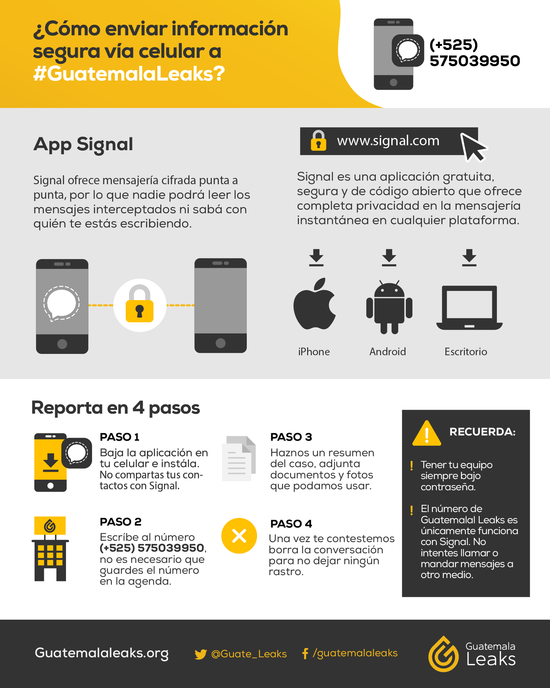

Publicaciones
Alcalde de Cahabón contrata a su compañero de planilla para trabajar en la municipalidad
Ojoconmipisto.com
El alcalde de Cahabón contrató al concejal suplente de su planilla para trabajar en la municipalidad. José Pablo López también tiene un contrato con el Ministerio de Salud que vence mañana. La información llegó a Guatemala Leaks y Ojoconmipisto.com la verificó. 🔎 Mas información
Ejecución del fondo de emergencia por el COVID-19
Guatemala Leaks
Ante el aumento de la crisis sanitaria y económica en Guatemala, la pregunta fue: ¿cómo está gastando el gobierno de Guatemala el dinero -propio y prestado- para paliar la emergencia ante la pandemia? La respuesta es que se está gastando poco y lento.
Para monitorear ese gasto lanzamos esta herramienta de medición de la ejecución del gasto público del fondo específico para el estado de calamidad pública provocado por el Covid-19.
Semanalmente, actualizaremos el gráfico para que el usuario pueda verificar cómo evoluciona el gasto del Decreto 5-2020 aprobado el 5 de marzo. El objetivo es establecer una herramienta de medición, fiscalización y seguimiento continuo.
Con esta actualización constante, la alianza de Guatemala Leaks -conformada por Ojo con mi pisto, Agencia Ocote, El Intercambio y Plaza Pública y apoyada por Red Ciudadana y PODER- se encargará de verificar los datos públicos para saber en qué está gastando -o no- el gobierno el dinero que debe responder a la necesidad social del país.
Renap registra 371 más fallecidos por COVID19 que el Ministerio de Salud
9 julio 2020 - Guatemala Leaks
Al 5 de julio, el Renap reportaba 1,318 personas fallecidas por coronavirus, en tanto que Salud informaba el mismo día 947. Además de esta diferencia de 371, el primero registraba 220 personas fallecidas de las que se sospecha que tenían COVID19, de éstas el Ministerio no ha informado. Las autoridades no aclaran estas diferencias. La discrepancia de datos podría ser aún mayor si se colocó otra causa de muerte, como la neumonía, o si los puestos de salud no reportan sus casos.
Mas información:
Agencia Ocote
El Intercambio
Ojoconmipisto
Plaza Pública
COVID-19: Salud coordinará con el RENAP cruce de datos de fallecidos
10 de julio de 2020 - Guatemala Leaks
Según el ministerio, esto permitirá tener una fuente adicional de casos para investigar. Aún falta por definir la metodología para compartir información.
El Ministerio de Salud Pública y Asistencia Social (MSPAS) coordinará con las autoridades del Registro Nacional de las Personas (Renap) cruzar información sobre personas fallecidas cuyos informes de defunción registren la covid-19 como una de las causas de su muerte. Ambas instituciones manejan cifras distintas respecto a la cantidad de personas que murieron por el virus desde el 15 de marzo hasta el 5 de julio. En este período Salud reportó 947 personas y el Renap 1,318, una diferencia de 371 pacientes, como reveló Guatemala Leaks el 9 de julio. El registro también anotó 220 muertes sospechosas de COVID-19.
Mas información:
Agencia Ocote
El Intercambio
Ojoconmipisto
Plaza Pública
Salud ajusta cifra de fallecidos, pero la discrepancia con Renap se mantiene
28 de julio de 2020 - Guatemala Leaks
Hasta el 5 de julio, el ministerio reportó 947 muertes. Con el nuevo tablero de COVID-19 la cifra cambió a 1 mil 081, aunque persiste una diferencia de 237 con los registros.
El ministerio de Salud (MSPAS) lanzó un nuevo portal para actualizar a diario la situación del coronavirus en el país. Uno de los cambios reflejados es la cifra de fallecidos que subió de 947 a 1 mil 081 hasta el 5 de julio. A esa fecha, el Registro Nacional de las Personas (Renap) reportó 1,318 fallecidos, es decir, una diferencia de 237 fallecidos, según reveló Guatemala Leaks el 9 de julio. Tras la publicación y con la nueva herramienta la cifra de pacientes fallecidos por COVID–19 aumentó en 134 defunciones.
Mas información:
Agencia Ocote
El Intercambio
Ojoconmipisto
Plaza Pública
Al menos 16 empresas sin experiencia vendieron Q24 millones en alimentos a municipalidades
1 septiembre 2020 - Guatemala Leaks
Constructoras, compañías de limpieza, imprentas y sociedades recién creadas se llevaron los contratos más elevados para surtir productos alimenticios.
Entre el 5 de marzo y el 31 de julio de 2020, 102 municipalidades compraron alimentos valorados en 48.8 millones de quetzales, para repartir entre la población afectada por la crisis sanitaria de la COVID-19. Los gobiernos locales adquirieron principalmente frijol, maíz, aceite, arroz, azúcar, pasta y sopas instantáneas. Una investigación de Guatemala Leaks determinó, después de revisar 126 adquisiciones superiores a 250 mil quetzales, que 68 contratos fueron adjudicados a 16 empresas o personas individuales que, previo a la pandemia, no habían vendido alimentos al Estado ni se dedicaban a la venta de alimentos. Estos 16 negocios recibieron los contratos más altos en venta de comida.
Mas información:
Agencia Ocote
El Intercambio
Ojoconmipisto
Plaza Pública
GuatemalaLeaks presenta amparo para que Renap entregue información pública sin costo
5 de noviembre de 2020 - Guatemala Leaks
El registro cobra Q250 por entregar las estadísticas vitales. Con esta medida se busca que la ciudadanía pueda ejercer su derecho a la información.
El Registro Nacional de las Personas (Renap) cobra por generar información pública que debería ser gratuita. Si hoy una persona quiere conocer datos de estadísticas como nacimientos o fallecimientos, por ejemplo, debe pagar Q250. Los medios que integran la alianza GuatemalaLeaks (Agencia Ocote, El Intercambio, Ojoconmipisto, y Plaza Pública), junto a la organización Red Ciudadana, realizaron este año varias solicitudes de información pública al Renap para analizar los datos de fallecimientos, en el contexto de la pandemia por COVID-19. El Renap condicionó la entrega de la información en varias ocasiones. En las resoluciones, cita el Acuerdo de Directorio 15-2020, aprobado en julio de 2020, en el que establece un cobro de Q250 por generar estadísticas de inscripciones de hechos y actos civiles que constan en la institución.
Mas información:
Agencia Ocote
El Intercambio
Ojoconmipisto
Plaza Pública
Renap deja de cobrar Q250 por estadísticas vitales, pero no a todos
10 de noviembre de 2020 - Guatemala Leaks
El acuerdo, que cobra vigencia el martes 10, limita quienes pueden hacer uso de esa prerrogativa.
El Registro Nacional de las Personas emitió un acuerdo para no cobrar Q250 por información que debería entregarse de manera gratuita, como lo establece la Ley de Acceso de Información Pública (LAIP). El mismo también determina quiénes gozarán de esta prerrogativa. A primera vista, el acuerdo 35–2020 pareciera ser la respuesta del Directorio para terminar con los cuestionamientos sobre por qué cobrar por entregar “estadísticas vitales” cuando la ley establece que la información pública es gratuita. Sin embargo, la disposición no para todas las personas.
Mas información:
Agencia Ocote
El Intercambio
Ojoconmipisto
Plaza Pública
El Gobierno de Guatemala oculta datos de los beneficiarios de los fondos de rescate
12 de noviembre de 2020 - Guatemala Leaks
CLIP en alianza con Guatemala Leaks (plataforma periodística integrada por Agencia Ocote, El Intercambio, Ojoconmipisto y Plaza Pública) confirmó que el gobierno no quiere revelar quiénes fueron los beneficiarios de los fondos de rescate a trabajadores y empresarios. Testimonios de pequeños empresarios y profesionales revelan que el beneficio no fue para ellos, pero sin información sobre estos dineros públicos, es difícil saber si ellos son la norma o la excepción.
Mas información:
Agencia Ocote
El Intercambio
Ojoconmipisto
Plaza Pública
El Renap deroga cobro que realizaba por entregar información pública
20 de abril de 2021 - Guatemala Leaks
El diario oficial publicó el acuerdo con el que da marcha atrás a la medida que vulnera la Ley de Acceso a la Información Pública. GuatemalaLeaks presentó un amparo en noviembre de 2020 para que la entregara de manera gratuíta.
Mas información:
Ojoconmipisto
La familia Véliz con contratos en el Estado
05 de noviembre de 2021 - Guatemala Leaks
Sabrina Véliz, asesora del diputado Jorge García de Prosperidad Ciudadana, se encuentra prófuga. El MP y la PNC no la localizaron en su casa esta mañana.
Mas información:
Ojoconmipisto
ALIADOS DE GUATEMALA LEAKS

Preguntas frecuentes
¿Qué es Guatemala Leaks?
Una plataforma independiente de denuncia ciudadana y transparencia al servicio de la sociedad guatemalteca para revelar información de interés público.
¿Por qué debería compartir información con Guatemala Leaks?
Principalmente porque la fiscalización de la cosa pública es una tarea que nos atañe a todos y todas, asimismo, porque creemos que desde esta alianza de medios de comunicación independientes podemos darle más fuerza a la información que guatemaltecos y guatemaltecas con interés en la fiscalización puedan compartir por medio de la plataforma. Igualmente creemos que estos ejercicios fortalecen a la ciudadanía guatemalteca, dándole un mayor rango de incidencia frente actuaciones opaca o poco transparentes que se desarrollan a lo interno del Estado.
¿Qué tipo de información recibe Guatemala Leaks?
Cualquier tipo de documentación sobre malos manejos de fondos públicos, tráfico de influencias, contrataciones anómalas, adjudicaciones opacas y demás malas prácticas gubernamentales que guatemaltecos y guatemaltecas deberíamos conocer.
¿Cómo puedo compartir información con Guatemala Leaks?
